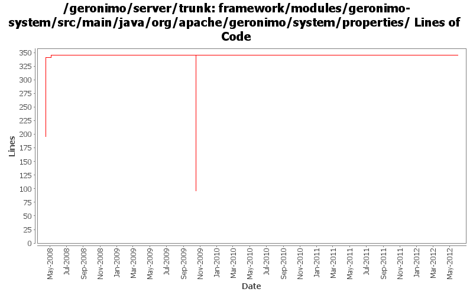

[root]/framework/modules/geronimo-system/src/main/java/org/apache/geronimo/system/properties

| Author | Changes | Lines of Code | Lines per Change |
|---|---|---|---|
| Totals | 16 (100.0%) | 423 (100.0%) | 26.4 |
| djencks | 6 (37.5%) | 249 (58.9%) | 41.5 |
| dwoods | 4 (25.0%) | 146 (34.5%) | 36.5 |
| jdillon | 4 (25.0%) | 18 (4.3%) | 4.5 |
| kevan | 1 (6.3%) | 6 (1.4%) | 6.0 |
| gawor | 1 (6.3%) | 4 (0.9%) | 4.0 |
GERONIMO-6199: Some Java vendor have less than six characters
4 lines of code changed in 1 file:
GERONIMO-5041 Integration aries osgi jndi implementation
0 lines of code changed in 2 files:
GERONIMO-4916 step 2 move sandbox osgi framework into trunk
249 lines of code changed in 2 files:
GERONIMO-4916 step 1 remove old framwork
0 lines of code changed in 2 files:
Fix old-style source license headers to use the current source license header format
6 lines of code changed in 1 file:
GERONIMO-4209 Geronimo does not start on SAP JVM. Markus, thanks for the patch.
1 lines of code changed in 1 file:
More loggers back to statics
3 lines of code changed in 1 file:
Start of custom SLF4J muck for Geronimo
9 lines of code changed in 1 file:
(GERONIMO-3985) Use SLF4J as the primary logging facade for Geronimo
6 lines of code changed in 2 files:
GERONIMO-3900 Add runtime support for non-Sun JVMs. Merged in updates from 2.1.1 branch.
145 lines of code changed in 3 files: